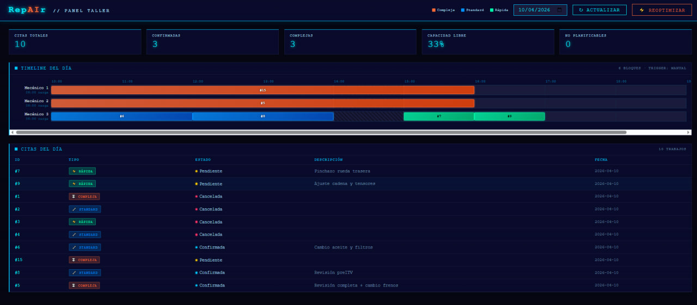
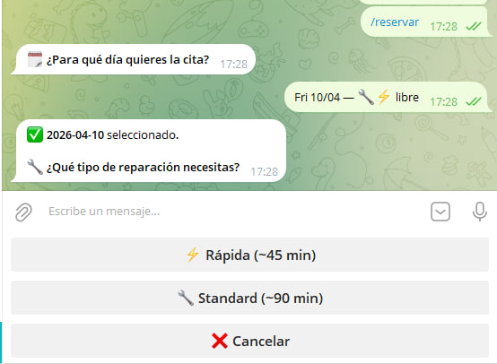
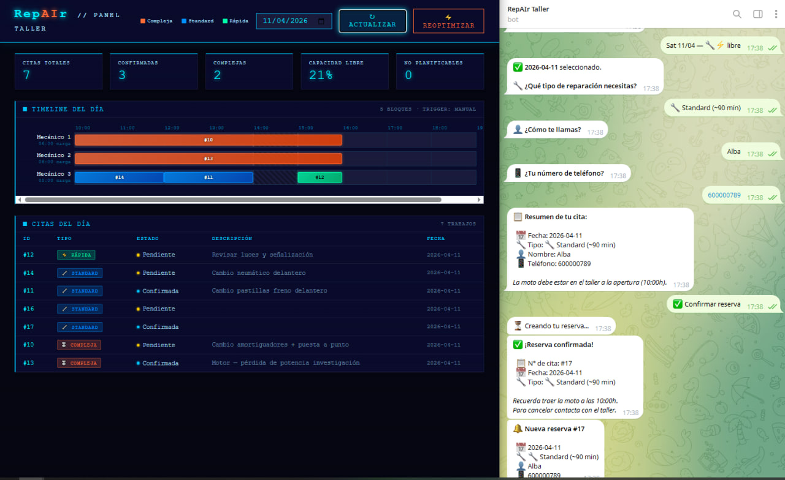
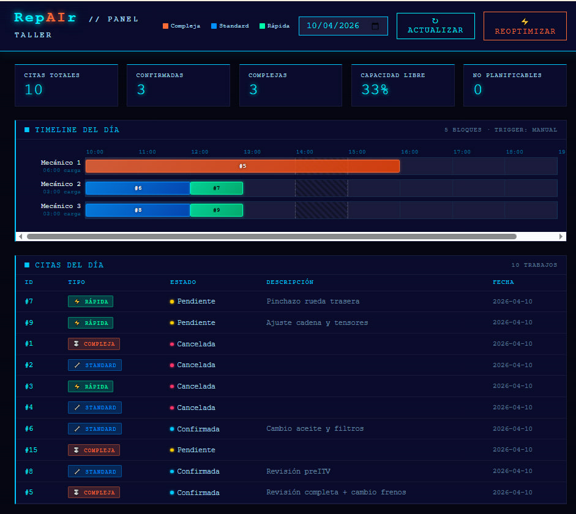
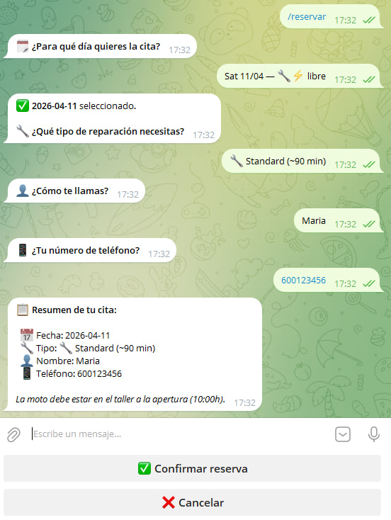
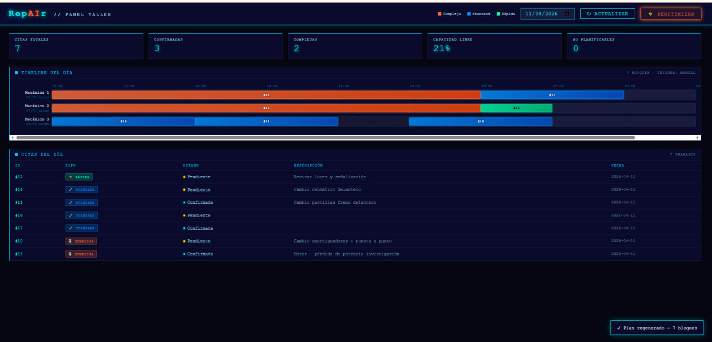
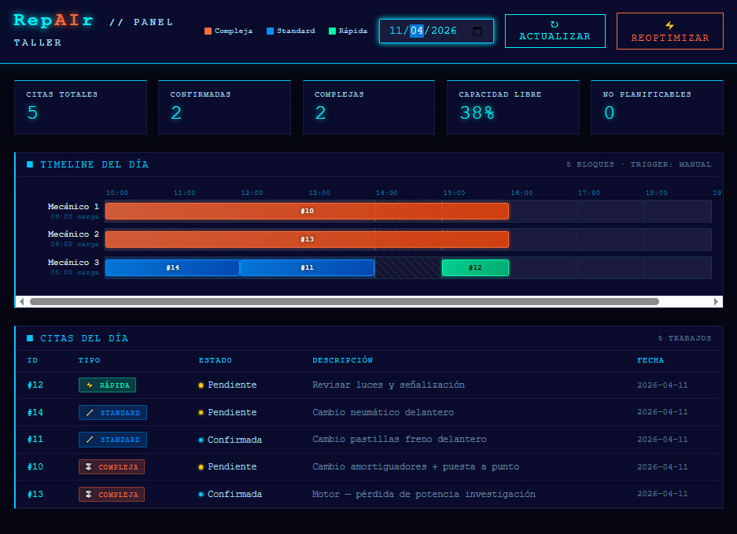

RepAIr gestiona las citas, organiza a los mecánicos y optimiza el día sin que tengas que mover un dedo. El cliente reserva, la IA planifica, tú supervisas.

El panel muestra en tiempo real el Gantt de mecánicos, los KPIs del día y el estado de cada cita. Se refresca automáticamente y se puede reoptimizar con un solo clic cuando cambia algo.



Citas totales, confirmadas, complejas, capacidad libre y no planificables. De un vistazo.
Gantt visual con bloques por tipo de reparación. Rápida, Standard o Compleja en colores.
El motor de IA redistribuye la carga de trabajo al instante cuando llega una nueva cita o cambia algo.
El panel se actualiza solo cada minuto. Sin F5, sin perder el hilo del día.
El sistema guía al cliente paso a paso: elige día, tipo de reparación y confirma. Todo verificado en tiempo real contra la disponibilidad del taller. La cita aparece en tu panel en segundos.

El sistema muestra únicamente los días con hueco real. Imposible reservar en un día lleno.
Rápida (~45 min), Standard (~90 min) o Compleja (~4h). La duración real entra directa en la planificación.
El cliente recibe resumen y número de cita al momento. Sin esperar tu respuesta.
Notificación inmediata con todos los datos. La cita ya está en el dashboard sin que hagas nada.
El cliente gestiona su cancelación solo. Tú ves el hueco liberado en el panel y la IA reoptimiza.

Esta demo corre sobre Telegram, pero el sistema es agnóstico al canal. Se puede conectar a WhatsApp Business, Instagram DMs o un chat interno para que el owner introduzca reservas cuando la llamada entra por teléfono. El motor de planificación y el dashboard son los mismos.
Cada vez que entra una cita, el motor recalcula el plan óptimo para el día. Respeta la carga de cada mecánico, los tiempos de comida, las reparaciones complejas y la capacidad máxima del taller.

RepAIr es un sistema a medida, desplegado en tu propio servidor, con tu branding y tus mecánicos. Sin suscripciones. Tuyo.